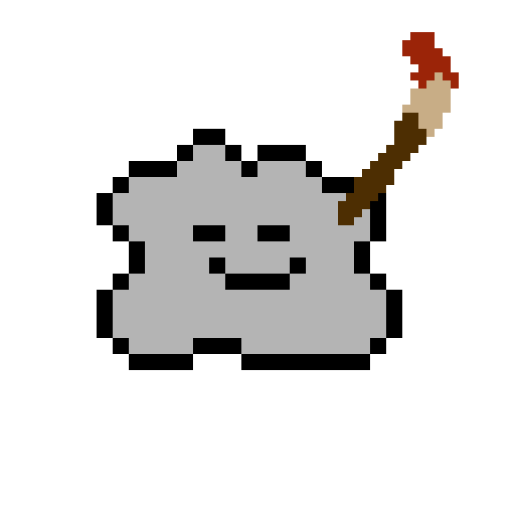

About Me | back
Contrary to what you may see, my name is not Doug. It is Riley!
For the uninitiated,Doug is a blob of mercury that never seems to leave me, and my personal page alone. He is usually found on the home.html page (home page), but has been known to venture into other pages from time to time.
Given his chaotic nature (none of which understood by science as he is the first of his kind), I have found a way to bargain with him, and make a solid deal:
-
Doug is the spokesperson of my page, but I am the one who maintains everything, and in some ways, its not too bad... At least most of the time.
If you're a recurring visitor, you may have seen some of Doug's shenanigans over the various pages, he has a tendency to mess things up so I have to go back in constantly to fix the bugs he causes.
I am a Software Developer in my 20s, and in my downtime I like to play games, listen to music, and maintain this site, regardless of how chaotic Doug tends to be, given some time, he will start to grow on you!
I think you may even come to like him in the end, and maybe... just maybe knowing the man behind the scenes may help your understanding along the way.
Here's to hoping Doug doesn't discover this page... Cheers folks.
- Riley Doug
